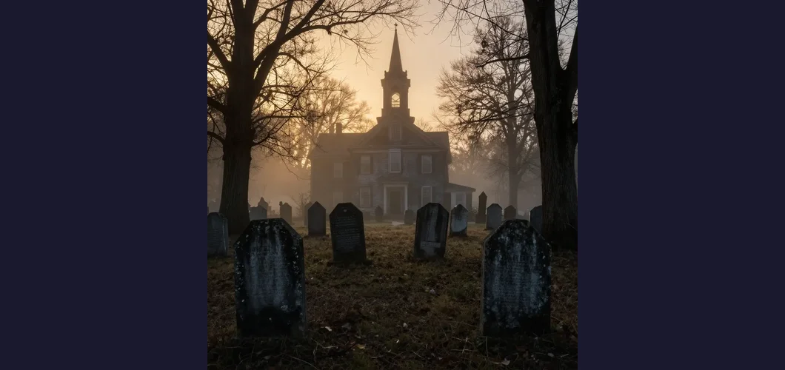

The New England Vampire Panic of 1892: When a TB Outbreak Spawned a Vampire Hunt

On a cold March morning in 1892, a group of men gathered at the Chestnut Hill Cemetery in Exeter, Rhode Island, with shovels in their hands and dread in their hearts. They were there to dig up the dead. The bodies belonged to the family of George Brown, a modest farmer who had watched, helpless, as consumption — the dreaded wasting disease now known as tuberculosis — claimed his wife Mary Eliza in 1883, his eldest daughter Mary Olive in 1884, and his youngest daughter Mercy Lena just weeks earlier, in January 1892. Now his only surviving child, his son Edwin, was gravely ill, coughing blood, growing thinner by the day. The townspeople of Exeter had a theory, one rooted in generations of folk belief: one of the dead Brown women was a vampire, rising from the grave at night to drain the life from her surviving relatives. The only way to save Edwin was to exhume the bodies, inspect them for signs of vampirism, and perform the appropriate ritual. George Brown, exhausted and desperate, gave his permission. On March 17, 1892, the men opened the graves. What they found horrified them. The bodies of Mary Eliza and Mary Olive had decomposed as expected. But Mercy Lena, who had been buried in a crypt for only two months during the cold New England winter, was remarkably preserved. Her skin was still lifelike. Her cheeks had color. And when they opened her chest cavity, they found her heart and liver contained liquid blood. To the terrified villagers, this was proof positive: Mercy Brown was a vampire. They cut out her heart and liver, burned them on a nearby rock, and mixed the ashes with medicine for Edwin to drink. It did not work. Edwin died two months later.
The Mercy Brown case is the most famous documented instance of the New England vampire panic, a wave of superstitious terror that swept through rural New England from the 1780s through the 1890s, claiming dozens — possibly hundreds — of victims. It was not the work of uneducated primitives. These were Yankee farmers, the descendants of Puritans, living in the shadow of universities and churches in one of the most literate regions of the United States. And yet, when their families began dying one by one from a disease they could not understand and could not cure, they turned to an ancient folk tradition that offered the only explanation that made sense: the dead were feeding on the living. The panic was concentrated in Rhode Island, eastern Connecticut, southern Massachusetts, Vermont, and other areas of rural New England — the same region that, two centuries earlier, had been convulsed by the Salem witch trials. The connection is not coincidental: both events represent the explosive collision of ignorance, fear, and community pressure in isolated communities facing threats they could not comprehend. But while the Salem witch trials lasted barely a year, the New England vampire panic endured for over a century, quietly claiming victims in rural graveyards long after the rest of the country had moved on to the modern age.
Consumption: The Disease That Devoured New England
To understand the vampire panic, you must first understand the disease that caused it. Tuberculosis, known in the 18th and 19th centuries as "consumption", was one of the most feared diseases in human history — and certainly the deadliest in 19th-century America. It was called consumption because it appeared to literally consume its victims from the inside out: a healthy person would develop a persistent cough, begin to lose weight, grow pale and weak, sweat through the night, and gradually waste away over months or years. The disease attacked the lungs, causing them to slowly dissolve into a bloody, sputum-filled mess. Victims coughed up blood, their voices grew hoarse, their eyes sunken, their skin ghostly white. It was a horrific, lingering death — and it was everywhere.
Consumption was the leading cause of death in 19th-century America, accounting for roughly one in every four deaths in some regions. It was so common, so pervasive, that it became a fixture of 19th-century culture: the "consumptive look" — pale skin, flushed cheeks, thin frame — was actually considered fashionable and romantic, an aesthetic ideal that influenced fashion, art, and literature. But in rural communities, where medical knowledge was limited and folk traditions ran deep, consumption was not romantic at all. It was terrifying. And its pattern of transmission — which modern medicine recognizes as bacterial, spreading through close contact within households — made it seem as though the disease was targeting families. When one family member died of consumption, another would fall ill. Then another. Then another. It was as if the dead were reaching back from the grave to claim the living. This observation — medically accurate in its description of household transmission, but catastrophically wrong in its interpretation — was the seed from which the vampire panic grew.
🚐 Tuberculosis by the Numbers
Tuberculosis has been called the greatest infectious killer in human history. In the 19th century, it was responsible for an estimated 25% of all deaths in Europe and North America. The disease is caused by the bacterium Mycobacterium tuberculosis, identified by Robert Koch in 1882 — a discovery that earned him the Nobel Prize and should, in theory, have ended the vampire panic overnight. But the news traveled slowly to rural New England, and old beliefs die hard. Even after Koch's discovery, exhumations continued for another decade. Today, tuberculosis remains a major global health threat, killing approximately 1.3 million people per year worldwide, primarily in developing countries. The symptoms that terrified 19th-century New Englanders — the wasting, the coughing, the blood — are the same symptoms described in ancient Egyptian medical texts dating back to 1500 BCE. The disease has been with us for as long as civilization itself, and for most of that history, it has been misunderstood.

The Vampire Folk Belief: How New England's Undead Were Different
The vampire belief that took root in New England was not the same as the European vampire tradition familiar from Bram Stoker's Dracula and Hollywood films. There were no capes, no fangs, no castles in Transylvania, no fear of garlic or crucifixes. The New England vampire was a subtler, more domestic creature — and in some ways, more terrifying. The folk belief held that when a family member died of consumption, that person's spirit — or in some versions, their physical body — could drain the life force from surviving relatives, causing them to sicken and die in the same manner. The "vampire" did not need to leave the grave physically; the connection was spiritual, a kind of posthumous parasitism that operated across the boundary between life and death.
The remedy was to exhume the body of the suspected vampire and look for specific signs. If the corpse was unusually well-preserved — if the skin was still lifelike, the cheeks flushed, the limbs flexible — this was taken as evidence that the dead person was not truly dead but was maintaining a connection to the living. Most critically, if the heart or other organs contained liquid blood, this was considered definitive proof of vampirism. The prescribed ritual varied but typically involved burning the heart and liver (and sometimes other organs), scattering or consuming the ashes, and in some cases rearranging the bones of the skeleton to prevent the vampire from rising. This was not mindless mob violence. It was a carefully performed folk ritual, carried out with solemnity and genuine belief, often with the consent and participation of the grieving family. The people who performed these rituals were not monsters; they were desperate parents and siblings and neighbors, trying to save the lives of people they loved using the only tools available to them.
Why the "Vampire" Label Is Misleading
The people of rural New England did not use the word "vampire" to describe what they were doing. That term was applied later, by outsiders — journalists, folklorists, and sensation-seeking newspaper reporters who recognized the parallels between the New England rituals and the European vampire legends popularized by Bram Stoker's Dracula (published in 1897, just five years after the Mercy Brown case). The New Englanders themselves used terms like "the dead feeding on the living" or simply described the ritual without naming it. Folklorist Michael Bell, who has spent decades studying the phenomenon, argues that the New England tradition is better understood as a folk medical practice than as a vampire myth — a desperate attempt to combat a terrifying disease using the only explanatory framework available. The label "vampire" distorts the reality by importing a Hollywood mythology that had nothing to do with what these people believed or why they did what they did. This distinction mirrors the way the Dancing Plague of 1518 has been variously attributed to demonic possession, ergot poisoning, or mass hysteria — each label reflecting the assumptions of the labeler more than the experience of the labeled.
📝 Henry David Thoreau's Vampire Account
The great American naturalist and writer Henry David Thoreau recorded a vampire exhumation in his journal in March 1859, demonstrating how widespread and accepted the practice was in rural New England. Thoreau wrote about a family in a nearby town that had lost multiple members to consumption and had exhumed the body of the first to die, finding it "remarkably fresh." The heart was burned and the ashes given to the surviving family members. Thoreau, who was not generally sympathetic to superstition, reported the matter without ridicule, suggesting that the practice was common enough to be unremarkable even to a Harvard-educated intellectual. His account is one of the few literary records of the New England vampire tradition from a contemporary observer who was not a journalist seeking sensational material. It confirms that the practice was not limited to the uneducated poor but was embedded in the broader culture of rural New England.
The documented Cases: A Century of Exhumations
The Mercy Brown case was neither the first nor the last of the New England vampire exhumations — merely the most famous. Folklorists and historians have documented dozens of similar cases spanning over a century, and many more likely went unrecorded. These cases followed a remarkably consistent pattern: multiple deaths in a single family from consumption, followed by the exhumation of the most recently deceased family member, inspection of the body, and ritual burning of the heart and other organs. The cases were concentrated in Rhode Island, Connecticut, Massachusetts, Vermont, and parts of New Hampshire and Maine.
- Nancy Young, Foster, Rhode Island (circa 1819) — One of the earliest documented cases, sometimes called the "Narragansett" case. Young's family suffered multiple deaths from consumption, and her body was exhumed and burned to protect surviving family members.
- The Ray Family, Jewett City, Connecticut (1854) — Multiple members of the Horace Ray family died of consumption over several years. The remaining family members exhumed the bodies of the deceased, burned them, and reburied the remains in an attempt to stop the disease. The case was widely reported in local newspapers.
- The Wilbur Family, Exeter, Rhode Island (1874) — Several members of the Wilbur family died of consumption. The body of a family member was exhumed, examined, and found to be suspiciously well-preserved. The heart was burned and the ashes mixed with medicine for the surviving sick.
- Frederick Ransom, South Woodstock, Vermont (1817) — One of the few documented cases from Vermont. Ransom's father had his son's body exhumed after the young man died of consumption, and the heart was burned in an attempt to save other family members.
- "J.B." — Griswold, Connecticut (1830s, discovered 1990) — Perhaps the most archaeologically significant case. In 1990, children playing near a gravel mine in Griswold discovered a colonial-era cemetery. Connecticut state archaeologist Nick Bellantoni excavated the site and found one burial — designated "J.B." based on brass tacks on the coffin lid — that had been ritually rearranged. The skeleton had been beheaded, with the skull and thighbones placed atop the ribs and vertebrae in a skull-and-crossbones pattern. The rearrangement occurred approximately five years after death, consistent with the New England vampire ritual. The J.B. skeleton remains one of the most compelling physical evidences of the vampire panic.

The Griswold Discovery: Archaeology Meets Folklore
The 1990 Griswold discovery is significant because it provides physical, archaeological evidence of the vampire ritual, confirming the documentary accounts with tangible proof. When Connecticut state archaeologist Nick Bellantoni lifted the stone roof of the crypt containing J.B.'s remains, he found something he had never seen in decades of excavation: a skeleton that had been deliberately dismembered and rearranged. The head had been severed and placed on the chest. The thighbones had been removed and crossed over the ribs, creating a skull-and-crossbones pattern. The coffin had been smashed. Analysis showed that the bones belonged to a man of about fifty who had died in the 1830s, and that the dismemberment had occurred roughly five years after death — consistent with the timeline of New England vampire rituals, which were typically performed after a second or third family member fell ill. The J.B. skeleton is now housed at the Connecticut State Museum of Natural History and is considered one of the most important archaeological finds related to American folk beliefs. The discovery proved that the vampire exhumations were not a myth or an exaggeration by journalists but a real, practiced ritual with a specific archaeological signature.
📜 Dr. William Browning and the Providence Journal (1896)
In 1896, just four years after the Mercy Brown case, a physician named Dr. William Browning published an article in the Providence Journal titled "Vampirism in New England." Browning's article was one of the first medical commentaries on the phenomenon, and it represents the moment when the medical establishment began to publicly engage with the folk practice. Browning, who understood the bacterial nature of tuberculosis, described the exhumation rituals with a mixture of clinical detachment and cultural fascination. He documented several cases and noted that the practice was "by no means uncommon" in rural Rhode Island. His article helped bring the vampire panic to wider public attention and marked the beginning of the transition from folk belief to historical curiosity. The Providence Journal's coverage also demonstrates the role of the press in both perpetuating and demystifying the practice — newspapers had reported on vampire exhumations throughout the 19th century, sometimes with lurid sensationalism, sometimes with sober analysis.
How Science Conquered Fear: The End of the Panic
The New England vampire panic did not end dramatically, with a single revelation or proclamation. It ended slowly, unevenly, as the germ theory of disease gradually replaced folk explanations in the popular consciousness. The critical turning point was Robert Koch's discovery of the tuberculosis bacillus in 1882, which provided a scientific explanation for the disease that had terrified rural communities for generations. Once people understood that consumption was caused by a bacterium — not by the undead — the rationale for the vampire rituals collapsed. But the transition was not instantaneous. In rural areas where folk traditions ran deep and medical access was limited, the old beliefs persisted for years, even decades, after Koch's discovery. The Mercy Brown case itself occurred ten years after Koch identified the tuberculosis bacterium, a testament to the tenacity of folk belief in the face of scientific progress.
The final defeat of the vampire panic came not from a single discovery but from the gradual modernization of rural New England. As roads improved, doctors became more accessible, hospitals were built, and public health campaigns educated communities about the bacterial nature of tuberculosis, the conditions that had given rise to the vampire belief gradually disappeared. By the early 20th century, the exhumation ritual had essentially ceased, though stories of the old vampire scares continued to be told in rural communities for generations. Today, the New England vampire panic is remembered primarily as a fascinating chapter in American folk history — a reminder that even in a nation founded on reason and enlightenment, fear and ignorance can drive ordinary people to extraordinary acts. The panic also demonstrates how the absence of scientific understanding can create a vacuum that is filled by folk belief — a pattern visible throughout history, from the Cadaver Synod of 897, in which a pope put a corpse on trial, to the medical quackery of every era. The vampires of New England were not supernatural monsters. They were bacteria, invisible and deadly, hiding in plain sight.
🧴 The Monsters We Make
The New England vampire panic is a story about what happens when people face an invisible, unstoppable killer with no understanding of its cause. It is easy, from the comfort of the 21st century, to dismiss the Exeter villagers as ignorant and superstitious. But they were not stupid. They were observing a real phenomenon — the clustering of tuberculosis deaths within families — and drawing a logical (if incorrect) conclusion from the evidence available to them. The dead person was the only connection between the victims; therefore, the dead person must be causing the deaths. It was a flawed syllogism, but it was not irrational. The tragedy of the vampire panic is not that people believed in vampires but that they had no better alternative. George Brown watched his family die one by one, and the only remedy his community could offer was to burn his daughter's heart and mix the ashes with medicine. That he consented to this ritual is not evidence of his ignorance but of his desperation. The real monsters in the New England vampire panic were not the undead but the bacteria that killed silently and the poverty that left rural communities without access to the medical knowledge that might have saved them.
Frequently Asked Questions
Who was Mercy Brown?
Mercy Lena Brown (1872-1892) was a young woman from Exeter, Rhode Island, who died of tuberculosis in January 1892. She was the third member of her family to die of the disease, after her mother Mary Eliza (died 1883) and her sister Mary Olive (died 1884). When her brother Edwin fell ill, townspeople convinced her father George Brown to exhume the family's bodies. Mercy's body was found to be remarkably well-preserved with liquid blood in her heart, leading the community to conclude she was a vampire. Her heart and liver were burned and the ashes fed to Edwin, who nonetheless died two months later. She is buried in Chestnut Hill Cemetery in Exeter.
How many vampire exhumations occurred in New England?
Folklorists and historians have documented at least several dozen cases of vampire exhumations in New England between the 1780s and 1890s, concentrated in Rhode Island, Connecticut, Massachusetts, and Vermont. Folklorist Michael Bell has documented over 20 specific cases in detail, and many more likely went unrecorded. The actual number is almost certainly higher, as many exhumations were performed quietly and without official documentation.
Why did people think tuberculosis was caused by vampires?
Tuberculosis spreads easily within households through close contact, so when one family member died, others often fell ill. Without knowledge of bacteria, rural communities interpreted this pattern as evidence that the dead were draining the life from the living. The physical symptoms of tuberculosis — pale skin, wasting, coughing blood — also matched the European folklore description of vampire victims, reinforcing the connection. The folk belief that the first family member to die of consumption was preying on survivors was a rational (if incorrect) explanation for an observable pattern.
What happened to the J.B. skeleton found in Griswold?
The skeleton designated "J.B." was discovered in 1990 by children playing near a gravel mine in Griswold, Connecticut. Connecticut state archaeologist Nick Bellantoni excavated the site and found that the skeleton had been ritually dismembered and rearranged — the head placed on the chest, the thighbones crossed over the ribs — approximately five years after death, consistent with New England vampire prevention rituals. The bones were analyzed and determined to belong to a man of about fifty who had died in the 1830s. The remains are now housed at the Connecticut State Museum of Natural History at the University of Connecticut in Storrs.
📖 Recommended Reading
Want to learn more? Check out Food for the Dead: On the Trail of New England's Vampires on Amazon by folklorist Michael E. Bell, the leading scholar on New England vampire exhumations. (As an Amazon Associate, we earn from qualifying purchases.)
References & Further Reading
- Wikipedia: Mercy Brown Vampire Incident — Detailed account of the 1892 exhumation in Exeter, Rhode Island
- Wikipedia: New England Vampire Panic — Overview of the broader phenomenon including documented cases and background
- Wikipedia: Tuberculosis — The bacterial disease whose symptoms and transmission patterns fueled the vampire belief
- Science History Institute: Vampire Panic — Detailed podcast and article on the intersection of folk belief and medical ignorance
- Wikipedia: Nick Bellantoni — The Connecticut state archaeologist who excavated the J.B. skeleton in Griswold
- Wikipedia: Robert Koch — The scientist who discovered the tuberculosis bacterium in 1882, providing the knowledge that ended the panic
- Wikipedia: Michael Bell (Folklorist) — The leading scholar of the New England vampire tradition who has documented dozens of cases
Editorial note: historical interpretations of folk practices are continuously refined as new documentary and archaeological evidence emerges. See our Editorial Policy.